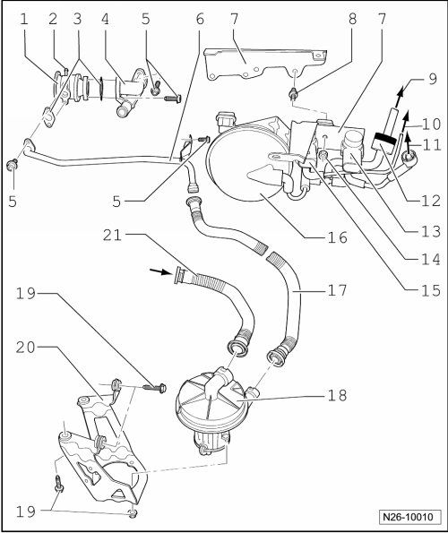
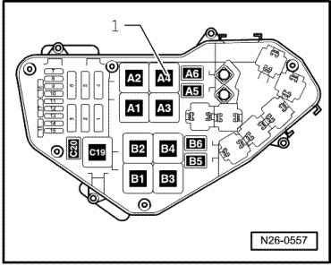

Secondary Air Injection System, Assembly Overview
Secondary Air Injection System, Assembly Overview
• Secondary Air Injection (AIR) pump relay (J299)

1 Combination valve
• Checking --> [ Secondary Air Injection System Combination Valve, Checking ] Secondary Air Injection System Combination Valve, Checking.
2 Vacuum connection
3 Gasket
• Replace
4 Connection
5 10 Nm
6 Pressure pipe
7 Bracket
8 Stud, 8 Nm
• Screwed into intake manifold
9 To Intake manifold
10 To combination valve
11 To vacuum actuator
• for variable intake manifold
12 Non-return valve
• Note installation position
• White connector faces vacuum reservoir
13 Intake Manifold Tuning (IMT) valve (N156)
14 8 Nm
15 Secondary Air Injection (AIR) solenoid valve (N112)
16 To vacuum reservoir
17 Pressure hose
• Ensure seated tightly
• Press together at front to release
18 Secondary Air Injection (AIR) pump motor (V101)
19 10 Nm
20 Bracket
• For Secondary Air Injection (AIR) pump motor (V101)
21 Intake tube
• From upper air filter housing
• Ensure seated tightly
• Press together at front to release
Secondary Air Injection (AIR) Pump Relay (J299)

• Secondary air injection pump relay (J299) - 1 - is inserted in socket A4.
• If tools are necessary to pull relays or control modules out of the relay plate, first disconnect battery ground (GND) strap.